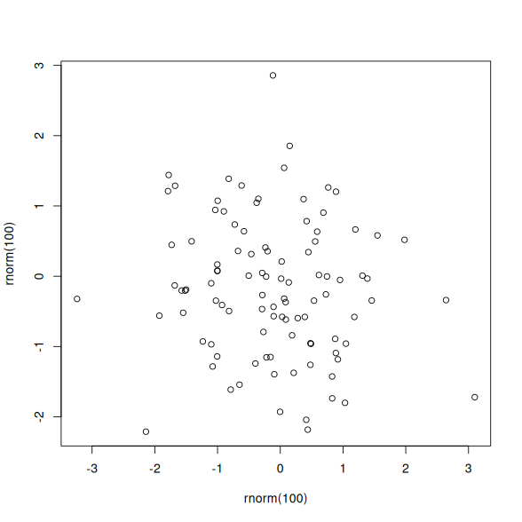
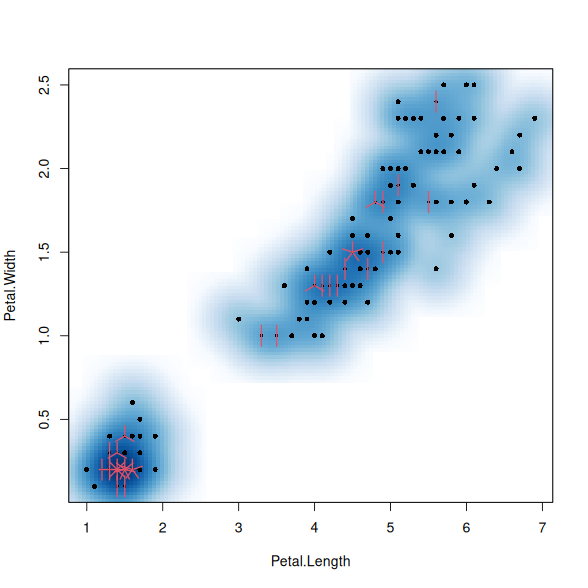

attr.* chunk optionsAdd an ID #example-a to the whole chunk.
Add line numbers to source blocks via the .line-numbers class.
Add the class .round to the first plot and set its width to 400px.
Add two classes .dark and .img-center to the second plot.
plot(rnorm(100), rnorm(100))

i34 = iris[, 3:4]
smoothScatter(i34)
sunflowerplot(i34, add = TRUE)

Define CSS rules for the classes in the #example-a chunk:
#example-a {
.round { border: solid 1px; border-radius: 50%; }
.dark { filter: invert(1); }
.img-center { display: block; margin: auto; }
}